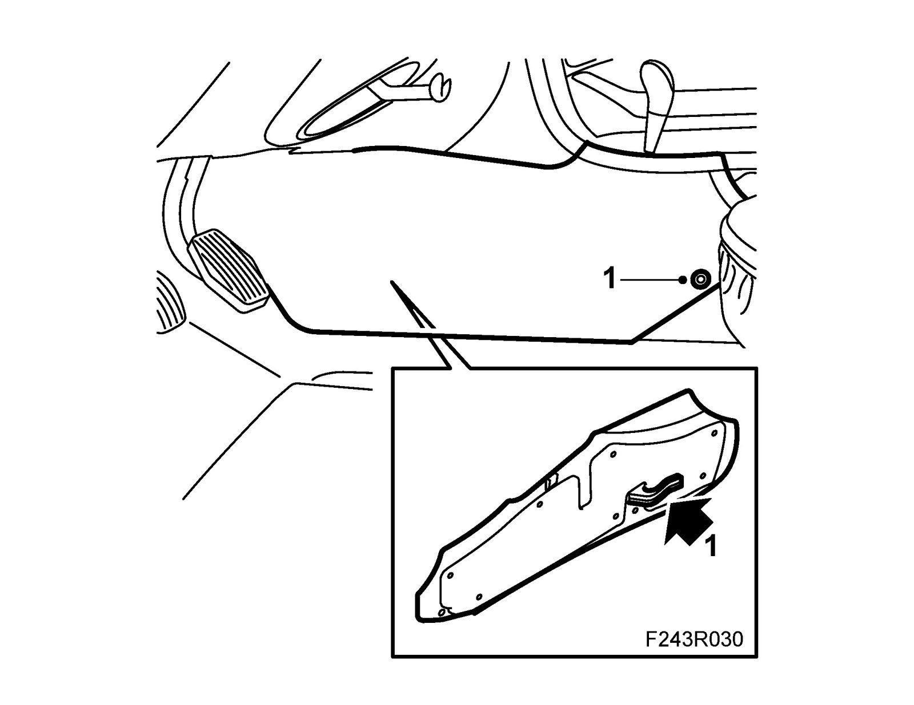
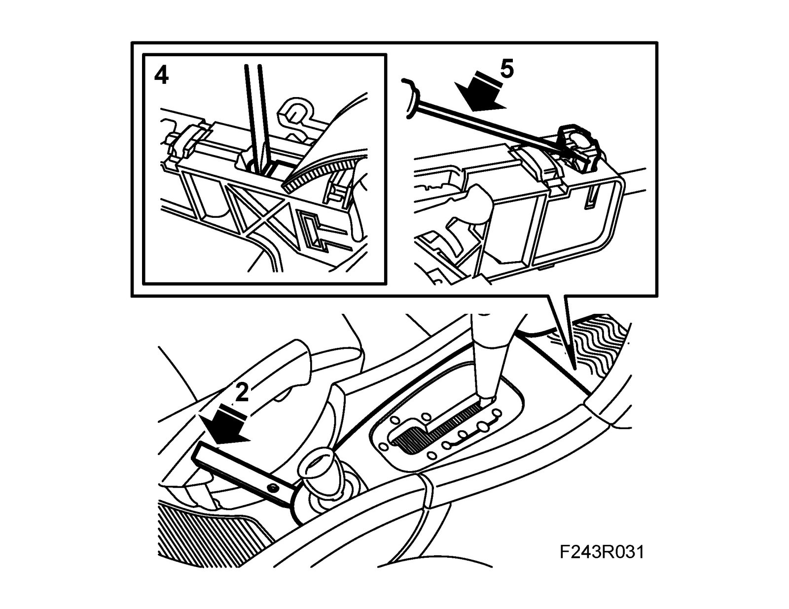
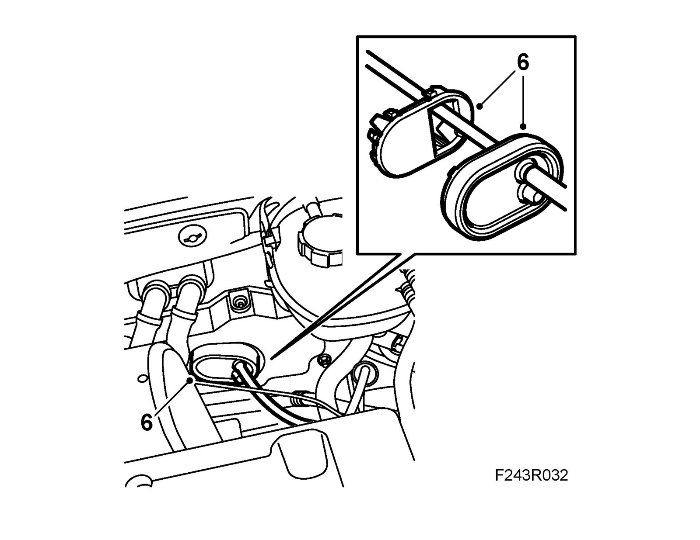
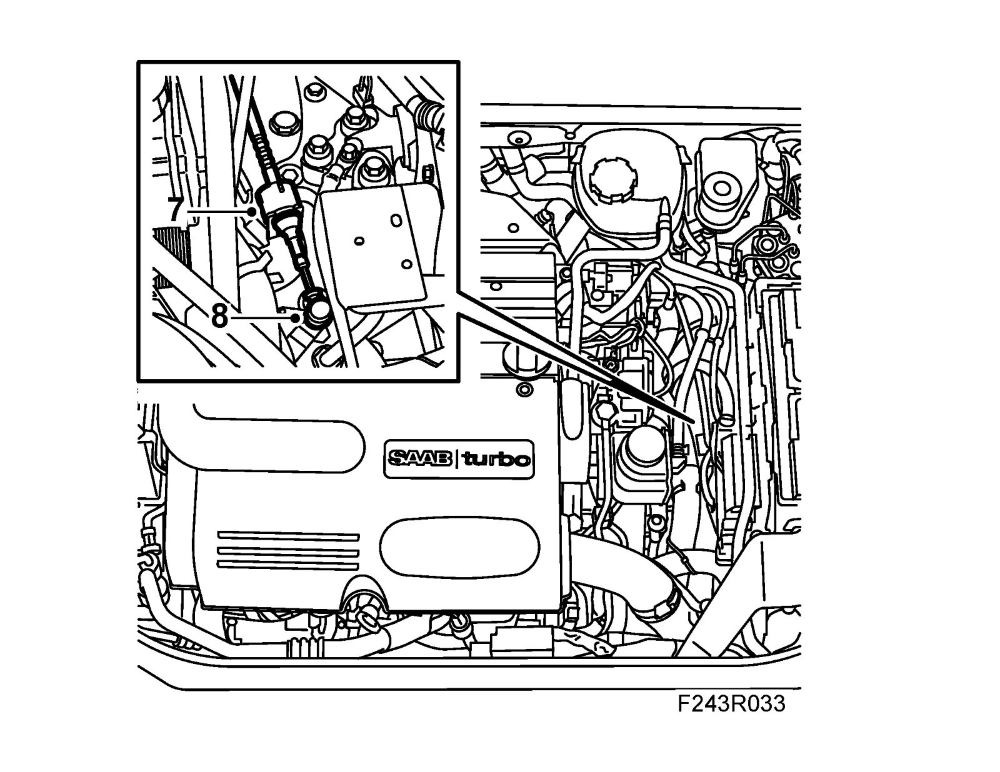
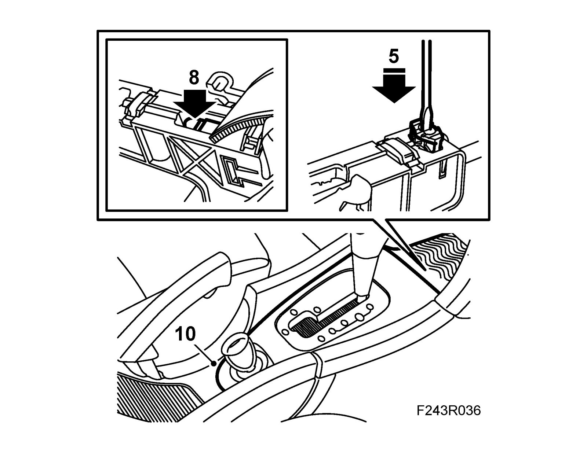
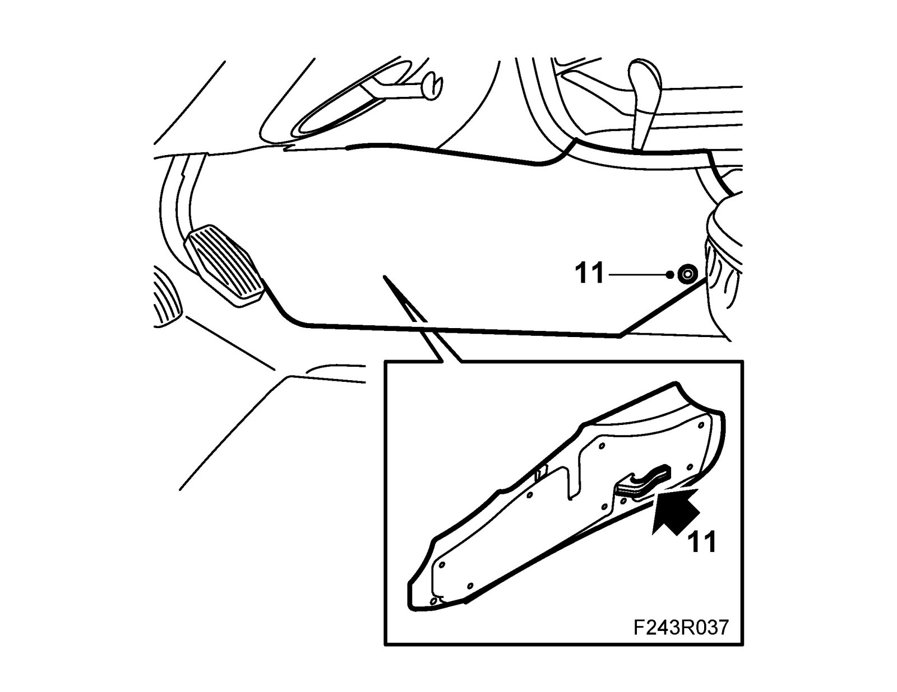

Shift Cable: Service and Repair
Gear cableTo remove
1. Remove the center console left-hand front side panel.

2. Remove the plastic cover for the selector lever and the rubber mat in the storage compartment.

3. Put the selector lever in P position.
4. Carefully press down a screwdriver blade in the cable adjuster and pry slightly towards the selector lever. A click is heard which means that the adjustment catch has released.
Important
Ensure that the wire adjustment is not damaged.
5. Lift the clip and detach the cable sheath from the selector lever housing.
6. Undo the rubber seal in the bulkhead wall and then the plastic grommet.

7. Remove the cable from the cable retainer by pulling back the locking sleeve.

8. Remove the gear cable from the selector lever arm.
9. Pull out the cable through the engine bay.
To fit
1. Fit the gear cable by inserting it through the bulkhead from the engine bay. Make sure it is situated correctly in the selector lever housing.
2. Fit the cable grommet. The cable should be on the left-hand side of the grommet.
3. Fit the gear cable to the selector lever arm.
4. Attach the cable to the cable retainer on the transmission by pulling back the locking sleeve.
5. Press the cable retainer into the selector lever housing.

6. Engage P with the gear selector on the transmission.
7. Rock the car until the parking lock engages.
8. Press down the locking brace by the selector lever housing securing the adjuster.
9. Check the shifting positions.
10. Fit the plastic cover for the selector lever and the rubber mat in the storage compartment.
11. Fit the center console left-hand front side panel.
